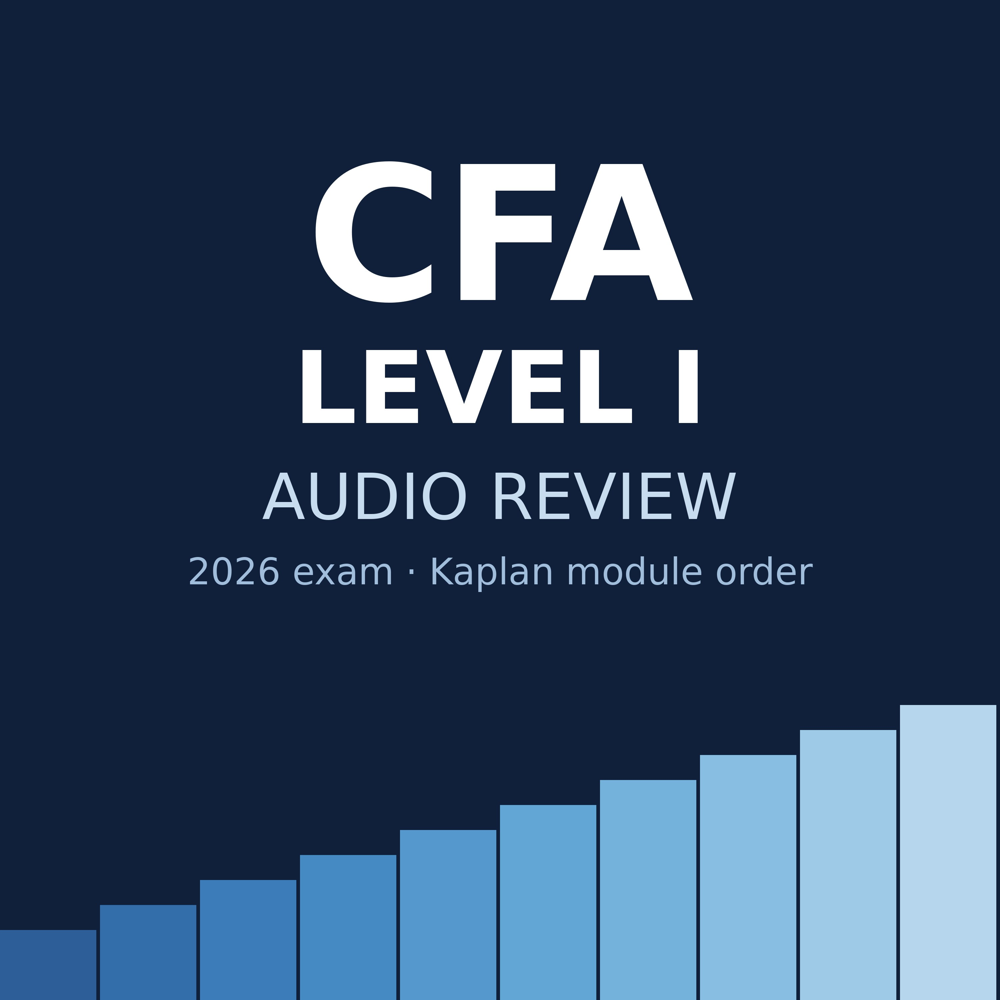

Private, unlisted study feed. In Apple Podcasts on iPhone: Library, the More button (three dots), Follow a Show by URL, then paste:
https://samriveracs.github.io/cfa-audio/feed.xml
Original review audio keyed to Kaplan Schweser module numbers. Not produced by or affiliated with Kaplan or CFA Institute.
| 1 | Quantitative Methods | Rates, Returns and the Time Value of Money Modules 1.1 to 2.2 | 31:37 | MP3 · Text |
| 2 | Quantitative Methods | Return Statistics and Probability Trees Modules 3.1 to 4.1 | 31:50 | MP3 · Text |
| 3 | Quantitative Methods | Portfolio Math, Simulation and Sampling Modules 5.1 to 7.1 | 32:18 | MP3 · Text |